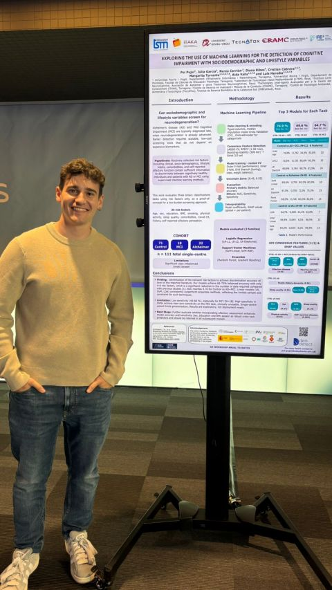

Investigación · Trabajo de Fin de Máster · URV
DemDetect
Inteligencia artificial para la detección temprana de la demencia mediante olfatometría.
- Rol
- Junior Data Scientist Researcher
- Centro
- TecnATox · URV
- Grupo
- Laboratori de Toxicologia i Salut Mediambiental
El proyecto
DemDetect es un proyecto de investigación que desarrolla un modelo basado en inteligencia artificial para detectar la demencia de forma temprana a partir de pruebas de olfatometría.
Mi aportación
Pendiente de redactar: tu contribución concreta dentro del proyecto.